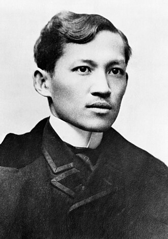

A sketch of Dr. Jose Rizal
Dr. José Protacio Rizal Mercado y Alonso Realonda (June 19, 1861 – December 30, 1896) was a patriot, physician, and man of letters who inspired the Philippine nationalist movement.
So as an young student his words "Kabataan ang kinabukasan ng bayan." hits me hard for even if im not an bright student and does not excell in a category or career i chose, for his words i now know that someone out there believes and trusts in me.
So I made this tribute page to honor and look at the past for there is no future if the past haven't resulted to the present. To one of our heroes cheers!